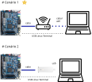
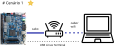
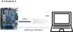
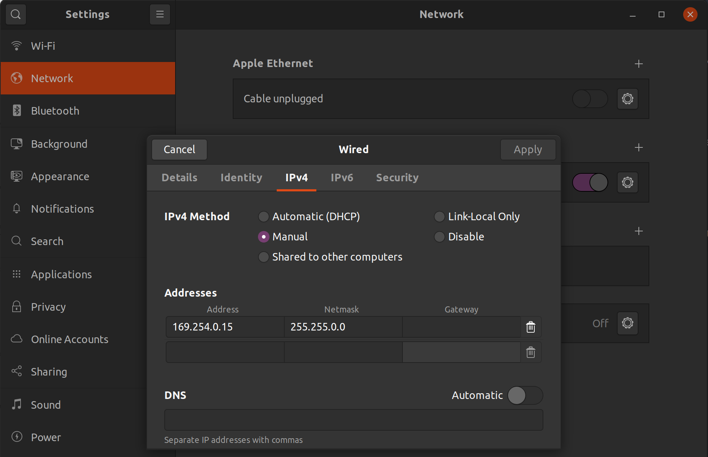

Ethernet¶
Cyclone V Hard Processor System Technical Reference Manual
https://www.intel.com/content/dam/www/programmable/us/en/pdfs/literature/hb/cyclone-v/cv_54001.pdf
São dois cenários possíveis:
- Conectar a DE10-Standard a um roteador via cabo de rede
- Conectar a DE10-Standard no seu PC via um NIC (foi junto com o kit)

Cenário 1 - roteador¶
Tip
Se possível, escolha esse cenário.

Conecta-se a placa no roteador e o PC no roteador via wifi ou cabo.
Siga os passoas a seguir:
- Conecte a DE10-Standard via cabo de rede no roteador
- Conecte-se a placa via a porta USB-Serial (screen)
- Ligue a placa (com o SDCARD)
- Configure o target
Configurando target¶
Com um cabo ethernet conectado ao RJ45, precisamos configurar o Linux para utilizar essa "porta".
No target, verifique se o linux detecta a placa de rede, com o comando: ifconfig eth0 up, e então ifconfig all.
Note
Depois iremos entender como o Linux sabe que existe uma porta ethernet.
Requisitando IP (DHCP)¶
Agora é necessário buscar um IP no servidor de DHCP (que está no seu roteador), para isso utilizaremos o programa udhcpc, com o comando a seguir:
$ udhcpc eth0
Para ver o ip
$ ifconfig
Testando¶
Para testar vamos pingar Host → Target e Target → Host, Target → internet
Verifique o IP com o comando ifconfig e tente pingar algum site ping google.com.
Cenário 2 - NIC¶

Conecta-se a placa ao computador via o adaptador NIC.
Siga os passos a seguir:
- Conecte a DE10-Standard a NIC
- Conecte a NIC ao USB do seu PC
- Conecte-se a placa via a porta USB-Serial (screen)
- Ligue a placa (com o SDCARD)
- Configure seu PC
- Configure o target
Configurando PC¶
Vamos ter que configurar um IP fixo na porta ethernet que a NIC cria no Linux do seu PC.

Configurando Target¶
Agora no target iremos configurar que a porta de rede tenha IP fixo:
$ ifconfig eth0 up
$ ifconfig eth0 169.254.0.13 netmask 255.255.0.0 up
Testando¶
Para testar vamos pingar Host → Target e Target → Host.
Tip
Importante validar antes de seguir.
Automatizando no boot¶
Essas configurações não são persistentes, se reiniciar o linux embarcados terá que fazer tudo novamente. Para facilitar nossa vida, vamos executar isso no boot.
RC¶
Já reparou nas pastas /etc/rc* do seu sistema operacional? É lá que reside grande parte dos scripts que são executados no boot/ reboot/ halt. Cada distribuição utiliza de forma diferente os scripts, por exemplo, o debian utiliza da seguinte forma:
| runlevel | directory | meaning |
|---|---|---|
| N | none | System bootup (NONE). There is no /etc/rcN.d/ directory. |
| 0 | /etc/rc0.d/ |
Halt the system. |
| S | /etc/rcS.d/ |
Single-user mode on boot. The lower case s can be used as alias. |
| 1 | /etc/rc1.d/ |
Single-user mode switched from multi-user mode. |
| 2 .. 5 | /etc/rc{2,3,4,5}.d/ |
Multi-user mode. The Debian system does not pre-assign any special meaning differences among these. |
| 6 | /etc/rc6.d/ |
Reboot the system. |
| 7 .. 9 | /etc/rc{7,8,9}.d/ |
Valid multi-user mode but traditional Unix variants don’t use. Their /etc/rc?.d/ directories are not populated when packages are installed. |
Dentro de cada pasta rc.x os scripts possuem nomes que ditam a sequência na qual os scripts da pasta serão chamados.
Adicionando script ao boot - systemd¶
Crie um script com o nome S60MAC.sh na pasta /etc/init.d e adicione o código a seguir (depende de qual cenário você irá usar):
#!/bin/bash
case "$1" in
start)
printf "Setting ip: "
ifconfig eth0 down
ifconfig eth0 up
udhcpc eth0
[ $? = 0 ] && echo "OK" || echo "FAIL"
;;
*)
exit 1
;;
esac
#!/bin/bash
case "$1" in
start)
printf "Setting ip: "
/sbin/ifconfig eth0 169.254.0.13 netmask 255.255.0.0 up
[ $? = 0 ] && echo "OK" || echo "FAIL"
;;
*)
exit 1
;;
esac
Torne o script executável: chmod +x S60MAC.sh
Uma vez criado o script será necessário adicionar a inicialização do sistema, para isso devemos chamar (quando a iso utiliza systemd, que é o caso do Amstrong, mas não do buildroot):
$ systemctl enable S60MAC.sh